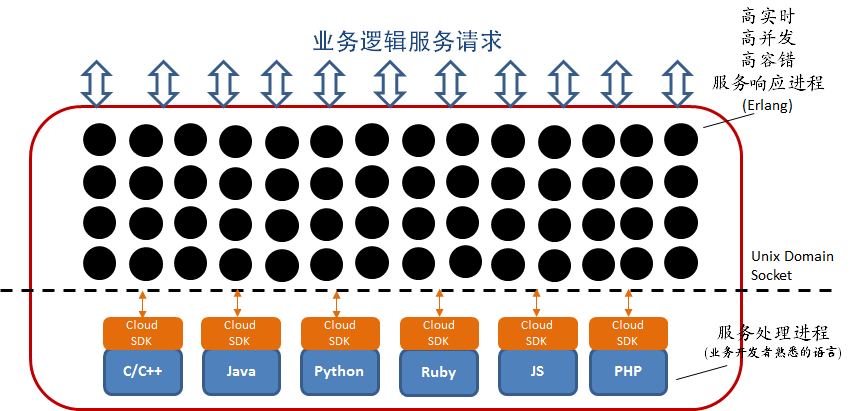

Dasudian Cloud API
Dasudian Cloud API 是一种基于简单消息模型的服务API，帮助服务构建者快速、简单地实现各种业务逻辑的REST API服务和Real-Time API服务。大数点Cloud API同时支持Publish/Subscribe和Request/Response两种通信模型，并且可基于我们提供的SDK使用任何一种支持的开发语言实现，目前包括：Java、C/C++、PHP、Javascript、Python、Ruby、Go和Perl。通过任何一种支持语言实现的API，经过编译后都可以运行在Dasudian API容器（DAC）内。而Dasudian API容器为大数点IoT云平台的一个基础PaaS服务，基于电信级服务开发平台Erlang实现，将合作伙伴实现的Cloud API运行在大数点分布在世界各地的计算容器内，帮助合作伙伴快速实现业务扩展、业务定点部署和业务升级。
Dasudian Cloud API包含以下特性，帮助您快速实现业务开发、部署和实现企业级SOA（Service Oriented Architecture）：
-
每个服务API只需要实现最少的Callback函数（仅一个请求回调函数）以响应服务请求，保持通过Dasudian Cloud API实现的服务简单，所以相对于其他解决方案错误几率更低；
-
每个服务API可以独立地配置其响应性能和分布式特征（如目标服务区域等），实现服务能力的高粒度优化；
-
每个服务可根据接收到的请求决定是否返回（Response）；
-
通过各种语言实现的服务API都由Erlang进程统一调度，保证一致的性能与容错能力；
- 每个服务可以根据实际需要由不同的语言实现，便于针对不同的业务需求选择最优的工具，可以根据业务处理逻辑调节、优化响应的允许延迟时间等。
DAC Architecture 
大数点Cloud API使用统一的通信原语subscribe、send_sync和send_aysnc(在不同的开发语言里有对应的函数)分别实现Pub/Sub的消息传输和点对点的消息传输，其中send_sync和send_async分别实现有响应的同步消息发送与异步消息发送。这三个函数都是对某个服务名称（API名称，如：“get_user_list”）表达式进行作用，当一个服务请求发送到对应的服务/API名称时，该请求就会被subscribe、send_sync或send_async了该服务名称的服务进程（在Dasudian API容器中运行的Cloud API实例）所接收到并进行处理。subscribe的服务名称表达式可以为 ”*”，表示匹配所有服务请求，若多个API服务进程subscribe了同一个服务名称，则对应的请求被随机分配到一个服务进程处理。
通信原语publish、return、和recv_async分别对应subscribe、send_sync和send_aysnc。publish用于向subscribe了某服务名称的服务进程或外部应用发布消息； return用于响应一个服务请求并返回数据，return可以返回一个null response如果服务请求者并不需要一个返回，调用return后该服务进程结束；recv_async接收来自于send_async发出的异步服务请求或消息。forward函数将服务请求转发给下一个服务进行处理，并结束自己的服务进程。